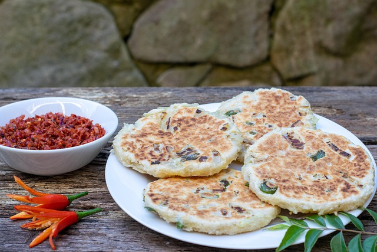

Spinazie flatbread
Home

Het recept
Ingredienten
- 1 kopje (120 g) kikkererwtenmeel
- 3/4 kop (180 ml) water
- 1/2 kop (50 g) gehakte spinazie
- 1/2 theelepel zout
- 1/2 theelepel zwarte peper
- 1/2 theelepel knoflookpoeder
- 1/2 theelepel komijn
- 1 el olijfolie
Bereiding
- Verwarm de oven voor op 200 graden Celsius. Vet een ovenschaal in met een klein beetje olie.
- Combineer in een middelgrote mengkom 1 kop (120 g) kikkererwtenmeel, 3/4 kop (180 ml) water, 1/2 theelepel zout, 1/2 theelepel zwarte peper, 1/2 theelepel knoflookpoeder en 1/2 theelepel komijn. Klop het mengsel grondig tot het een glad, klontervrij beslag vormt. Deze stap is cruciaal omdat een goed gemengd beslag ervoor zorgt dat het flatbread een consistente textuur heeft.
- Zodra het beslag glad is, roert u er een 1/2 kop (50 g) gehakte spinazie door. Gelijkmatig over het beslag is verdelen.
- Giet het beslag in de ingevette ovenschaal en spreid het gelijkmatig uit met de achterkant van een lepel of spatel. Besprenkel met 1 el olijfolie. Plaats de schaal in de voorverwarmde oven en bak 20 minuten – 25 minuten, of tot het flatbread goudbruin wordt rond de randen en stevig aanvoelt.
- Haal na het bakken het platbrood uit de oven en laat het een paar minuten afkoelen, waardoor het gemakkelijker te snijden is. Snijd het, eenmaal gekoeld, in porties afhankelijk van uw voorkeur, en serveer warm.